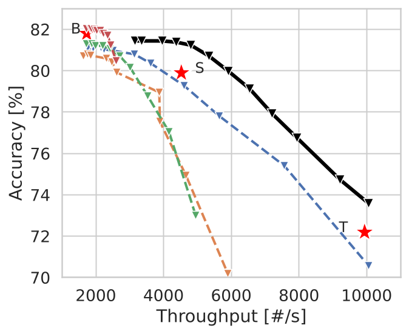
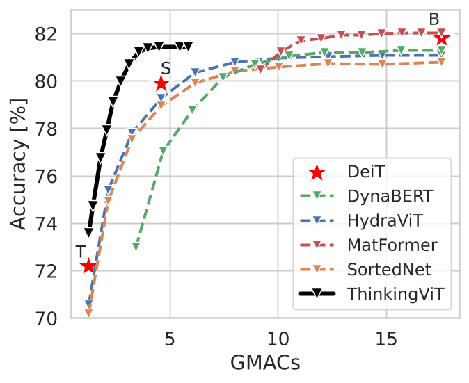
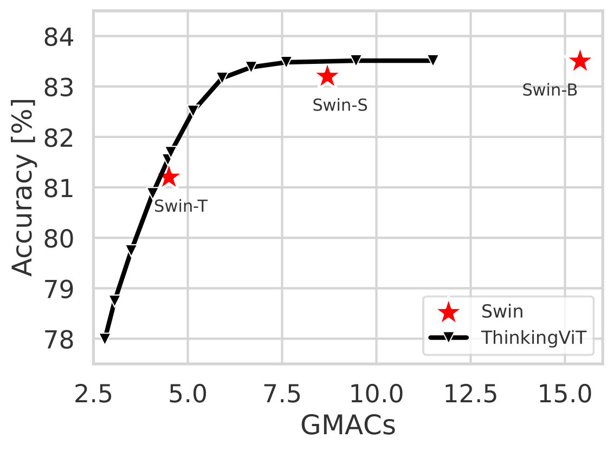

Progressive Thinking Stages
Inference starts with a smaller attention-head budget. If confidence is high enough, the sample exits early; otherwise, ThinkingViT activates a larger head subset and performs another stage.
Accepted at CVPR 2026.
arXiv:2507.10800Training, evaluation, checkpoints, and scripts.
GitHubReleased ThinkingViT checkpoints.
ZenodoOfficial CVPR 2026 virtual poster page.
CVPR 2026Original academic project page template.
Template creditCVPR 2026 Main Track Poster
A nested Vision Transformer that spends computation adaptively: easy inputs exit early, difficult inputs activate more attention heads and reuse earlier token embeddings.
Vision Transformers deliver state-of-the-art performance, yet their fixed computational budget prevents scalable deployment across heterogeneous hardware. Recent Matryoshka-style Transformer architectures mitigate this by embedding nested subnetworks within a single model to enable scalable inference. However, these models allocate the same amount of compute to all inputs, regardless of their complexity, which leads to inefficiencies.
ThinkingViT introduces progressive thinking stages that dynamically adjust inference computation based on input difficulty. It first activates a small subset of the most important attention heads and exits early when predictions are sufficiently certain. Otherwise, it activates additional attention heads and re-evaluates the input. Token Recycling conditions each subsequent stage on embeddings from the previous stage, enabling progressive improvement while preserving the backbone.
Inference starts with a smaller attention-head budget. If confidence is high enough, the sample exits early; otherwise, ThinkingViT activates a larger head subset and performs another stage.
Later stages are not independent reruns. They are conditioned on embeddings from previous stages, helping the model refine predictions while preserving the ViT backbone.
The design works as a plugin-style upgrade for vanilla ViT and extends to Swin Transformers, giving one model multiple accuracy-compute operating points.



@inproceedings{hojjat2026thinkingvit,
title={ThinkingViT: Matryoshka Thinking Vision Transformer for Elastic Inference},
author={Hojjat, Ali and Haberer, Janek and Pirk, Soren and Landsiedel, Olaf},
booktitle={Proceedings of the IEEE/CVF Conference on Computer Vision and Pattern Recognition (CVPR)},
year={2026},
url={https://arxiv.org/abs/2507.10800}
}The code builds on pytorch-image-models (timm) and draws inspiration from the HydraViT repository. We thank the timm maintainers, DeiT authors, and HydraViT authors for their open-source implementations.